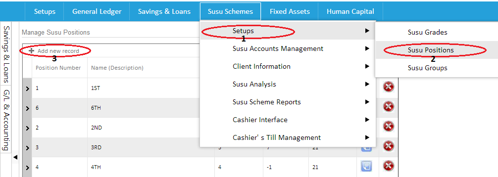

The Susu Positions can be assessed by clicking on susu schemes,follow the drop down to setups,locate susu position and click on it.After clicking on it a page opens where u can add new records to the positions.The columns include position number,name(description),Int rate and maximum default days.Click on the arrow beside the position number,which will give you a drop down to be able to add grades and amount to a specific position.This can be done by clicking on "attach grade to this position". To add you can click on add new record on your far left to add a new record and when you want to edit already existing records click on the blue icon on your right and the red icon to delete as shown in the images below

Created with the Personal Edition of HelpNDoc: Produce Kindle eBooks easily